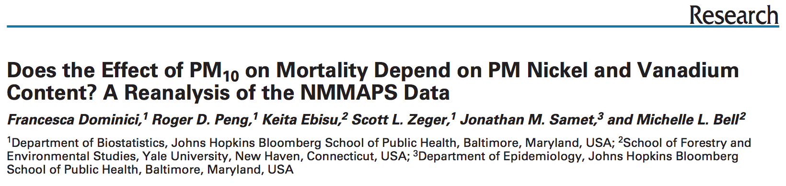

cacher
package.
cacher as an
author.
cacher as a
reader: clonecache() function.
code() function. Making a graph of the code:
graphcode() function.objectcode() function.runcode() function.checkcode() and checkobjects()
functions.loadcache() function.In the literate statistical program framework, we have the following situation:
Our paper has text and code.
The code chunks do something with the data and we store the results and the code in some central, in some database.
We have then the paper the figures and tables generated from the materials stored in the database.
There are some R packages that implement this process.
One is the cacheSweave package which we won’t talk
about, but it interacts with Sweave.
Another one is the cacher package, which is a
stand alone package.
cacher package.This package assumes that we have some code in an R file. And, basically, it reads the code, evaluates it and stores the results in a key-value database.
The R expressions are all given SHA-1 hash values so that changes can be tracked and code can be reevaluated if necessary.
So, the idea is that we put everything, the code and data, in a package that we could just give to someone.
cacher as a reader: clonecache()
function.The package will have an identifier like the SHA-1 in the following example:
clonecache() function.
code() function. Making a graph of the code:
graphcode() function.The reader could look at the code in the package
using the code() function.
Here’s an example of code performing a simple analysis:
We can also make a graph of the code just calling
the graphcode() function.
And here’s the outcome of the graphcode() function
(called just like that, without any arguments) in the previous
example:
cities
variable, the classes and the vars thing) came
together to create the data.data is combined with the
quasipoisson function to create
estimates.estimates are used to create an
effect and a standard error.This give then a rough graph of how the analysis worked.
objectcode() function.We could for instance be interested in inspecting the
data object, see what went into the creation of that
object.
We use for this the objectcode()
function.
runcode() function.We can also execute the code with the
runcode() function.
checkcode() and checkobjects()
functions.We can of course just force to run everything from scratch and do all the calculations from scratch.
This is what the checkcode() function
does.
There’s another function,
checkobjects(), that verifies the
integrity of each individual data object, checking for
any possible corruption of data (i.e. in transit).
loadcache() function.We can also load and look at specific data objects, with the
loadcache() function.
cities transferring occurs
from the cache database file (we can see the signature there of
that object) and then it prints, it shows us what it is.With the cacher package, authors
can create cache packages from their data analysis for
distribution.
Then readers can use the cacher package to ispect
others’ data analyses by examining cached computations (download the
analysis and look at specific objects or maybe rerun the whole
thing).
cacher package is mindful of readers’
resources.
It efficiently loads only those data objects that are needed.
In other words, there’s flexibility in terms of not having to recreate the entire environment if it’s a very complicated type of thing.
PM is composed of many different chemical elements
Some components of PM may be more harmful than others
Some sources of PM may be more dangerous than others
Identifying harmful chemical constituents may lead us to strategies for controlling sources of PM
The National Morbidity, Mortality, and Air Pollution Study (NMMAPS) was a national study of the short-term health effects of ambient air pollution
Focused primarily on particulate matter (\(PM_{10}\)) and ozone (\(O_3\))
Health outcomes included mortality from all causes and hospitalizations for cardiovascular and respiratory diseases
Key publications
Funded by the Health Effects Institute
Data made available at the Internet-based Health and Air Pollution Surveillance System (http://www.ihapss.jhsph.edu)
Research results and software also available at iHAPSS
Many studies (over 67 published) have been conducted based on the public data http://www.ncbi.nlm.nih.gov/pubmed/22475833
Has served as an important test bed for methodological development
http://www.ncbi.nlm.nih.gov/pmc/articles/PMC1665439/
Lippmann et al. found strong evidence that Ni modified the short-term effect of \(PM_{10}\) across 60 US communities
No other PM chemical constituent seemed to have the same modifying effect
To simple to be true?

http://www.ncbi.nlm.nih.gov/pmc/articles/PMC2137127/
Reexamine the data from NMMAPS and link with PM chemical constituent data
Are the findings sensitive to levels of Nickel in New York City?
Long-term average nickel concentrations appear correlated with PM risk
There appear to be some outliers on the right-hand side (it turns out that they are three counties in New York City - NYC is composed of five counties)
The positive slope indicates a positive correlation, so that more nickel is associated with a greater risk of mortality from PM.
And the regression line appears as statistically significant (\(p < 0.01\))
This was the conclusion of the original paper.
However, if we just remove the outlying points (in particular the points that are in New York City where nickel levels are very high) and we redo the regression line (the blue one), we see that the adjusted regression line is no longer statistically significant (\(p < 0.31\)).
So those three points to the right we took off, are called high leverage points. And the regression line can be very sensitive to high leverage points.
There were 60 communities in the original study.
Here, we went through each one and just redid the analysis by removing one community. Just to see if there were any particular communities that the analysis was sensitive to.
And we can see that all the black dots represent the slopes of the regression line when we remove a given community.
Because they’re all clustered around the same value, we can see that for the most part the regression line is not sensitive to removing any individual community from the dataset.
However, the red dot and red line at the very bottom indicates the slope estimate and the 95% confidence interval when we remove New York.
The slope estimate goes down quite a bit and the confidence intervals goes up (it gets quite a bit wider than all of the other dots).
And so, that’s another indication that the slope estimate of that regression line is very sensitive high leverage points.
New York does have very high levels of nickel and vanadium, much higher than any other US community
There is evidence of a positive relationship between Ni concentrations and \(PM_{10}\) risk
The strength of this relationship is highly sensitive to the observations from New York City
Most of the information in the data is derived from just 3 observations
Reproducibility of NMMAPS allowed for a secondary analysis (and linking with PM chemical constituent data) investigating a novel hypothesis (Lippmann et al.)
Reproducibility also allowed for a critique of that new analysis and some additional new analysis (Dominici et al.)
Original hypothesis not necessarily invalidated, but evidence not as strong as originally suggested (more work should be done)
Reproducibility allows for the scientific discussion to occur in a timely and informed manner
This is how science works
This section is a Keith Baggerly lecture, who is a professor in the Biostatistics and Bioinformatics Department at the MD Anderson Cancer Center, about a case that happened with some researchers at Duke University regarding using high dimensional genomic signatures in cancer outcomes.
We can find the lecture at this link:
http://videolectures.net/cancerbioinformatics2010_baggerly_irrh/
Sweave. Another approach is to use,
Rmarkdown and Knitr.sessionInfo()
R version 3.6.3 (2020-02-29)
Platform: x86_64-pc-linux-gnu (64-bit)
Running under: Ubuntu 18.04.6 LTS
Matrix products: default
BLAS: /usr/lib/x86_64-linux-gnu/blas/libblas.so.3.7.1
LAPACK: /usr/lib/x86_64-linux-gnu/lapack/liblapack.so.3.7.1
locale:
[1] LC_CTYPE=es_AR.UTF-8 LC_NUMERIC=C
[3] LC_TIME=es_AR.UTF-8 LC_COLLATE=es_AR.UTF-8
[5] LC_MONETARY=es_AR.UTF-8 LC_MESSAGES=es_AR.UTF-8
[7] LC_PAPER=es_AR.UTF-8 LC_NAME=es_AR.UTF-8
[9] LC_ADDRESS=es_AR.UTF-8 LC_TELEPHONE=es_AR.UTF-8
[11] LC_MEASUREMENT=es_AR.UTF-8 LC_IDENTIFICATION=es_AR.UTF-8
attached base packages:
[1] stats graphics grDevices utils datasets methods base
other attached packages:
[1] xtable_1.8-4 kernlab_0.9-29 R.utils_2.10.1 R.oo_1.24.0
[5] R.methodsS3_1.8.1 impute_1.60.0 RColorBrewer_1.1-2 maps_3.3.0
[9] stringr_1.4.0 lubridate_1.9.2 quantmod_0.4.20 TTR_0.24.2
[13] xts_0.12.1 zoo_1.8-9 readr_2.0.1 tidyr_1.2.0
[17] dplyr_1.0.8 reshape2_1.4.4 Hmisc_4.4-0 ggplot2_3.3.5
[21] Formula_1.2-3 survival_3.4-0 lattice_0.20-45 jpeg_0.1-8.1
[25] gitignore_0.1.3 rhdf5_2.30.1 httr_1.4.2 httpuv_1.6.3
[29] sqldf_0.4-11 RSQLite_2.2.0 gsubfn_0.7 proto_1.0.0
[33] DBI_1.1.1 data.table_1.14.0 jsonlite_1.7.2 XML_3.99-0.3
[37] xlsx_0.6.3 plyr_1.8.6
loaded via a namespace (and not attached):
[1] colorspace_2.0-3 ellipsis_0.3.2 htmlTable_2.0.1
[4] base64enc_0.1-3 rstudioapi_0.13 farver_2.1.0
[7] bit64_4.0.5 fansi_1.0.2 splines_3.6.3
[10] knitr_1.41 rJava_0.9-13 cluster_2.1.4
[13] png_0.1-7 clipr_0.7.1 compiler_3.6.3
[16] backports_1.4.1 assertthat_0.2.1 Matrix_1.5-1
[19] fastmap_1.1.0 cli_3.6.0 later_1.3.0
[22] formatR_1.14 acepack_1.4.1 htmltools_0.5.2
[25] tools_3.6.3 gtable_0.3.0 glue_1.6.2
[28] Rcpp_1.0.7 jquerylib_0.1.4 vctrs_0.5.2
[31] nlme_3.1-162 xfun_0.36 xlsxjars_0.6.1
[34] timechange_0.2.0 lifecycle_1.0.3 scales_1.1.1
[37] vroom_1.5.5 hms_1.1.0 promises_1.2.0.1
[40] parallel_3.6.3 yaml_2.2.1 curl_4.3.2
[43] memoise_1.1.0 gridExtra_2.3 sass_0.4.0
[46] rpart_4.1.19 latticeExtra_0.6-29 stringi_1.7.6
[49] highr_0.9 checkmate_2.0.0 chron_2.3-55
[52] rlang_1.0.6 pkgconfig_2.0.3 evaluate_0.19
[55] purrr_0.3.4 Rhdf5lib_1.8.0 htmlwidgets_1.5.4
[58] labeling_0.4.2 bit_4.0.4 tidyselect_1.2.0
[61] magrittr_2.0.2 R6_2.5.1 generics_0.1.2
[64] pillar_1.7.0 foreign_0.8-76 withr_2.5.0
[67] mgcv_1.8-41 nnet_7.3-18 tibble_3.1.8
[70] crayon_1.5.0 KernSmooth_2.23-20 utf8_1.2.2
[73] tzdb_0.3.0 rmarkdown_2.11 grid_3.6.3
[76] blob_1.2.2 digest_0.6.29 openssl_2.0.5
[79] munsell_0.5.0 viridisLite_0.4.0 bslib_0.3.0
[82] tcltk_3.6.3 askpass_1.1 Copyright © 2020 por Christian A. Karanicolas. Todos los derechos reservados. La elaboración de este sitio ha tenido como fuente principal de información el curso de Especialización en Ciencias de Datos brindado por la Johns Hopkins University a través de Coursera.